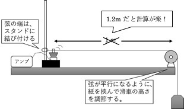
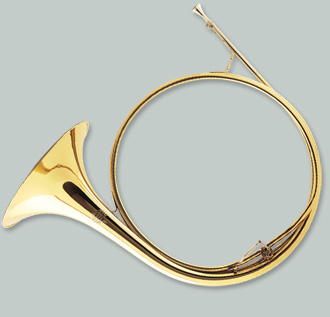
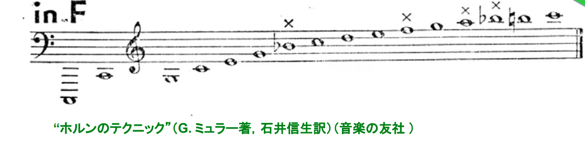
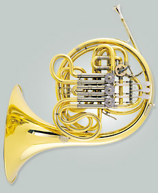
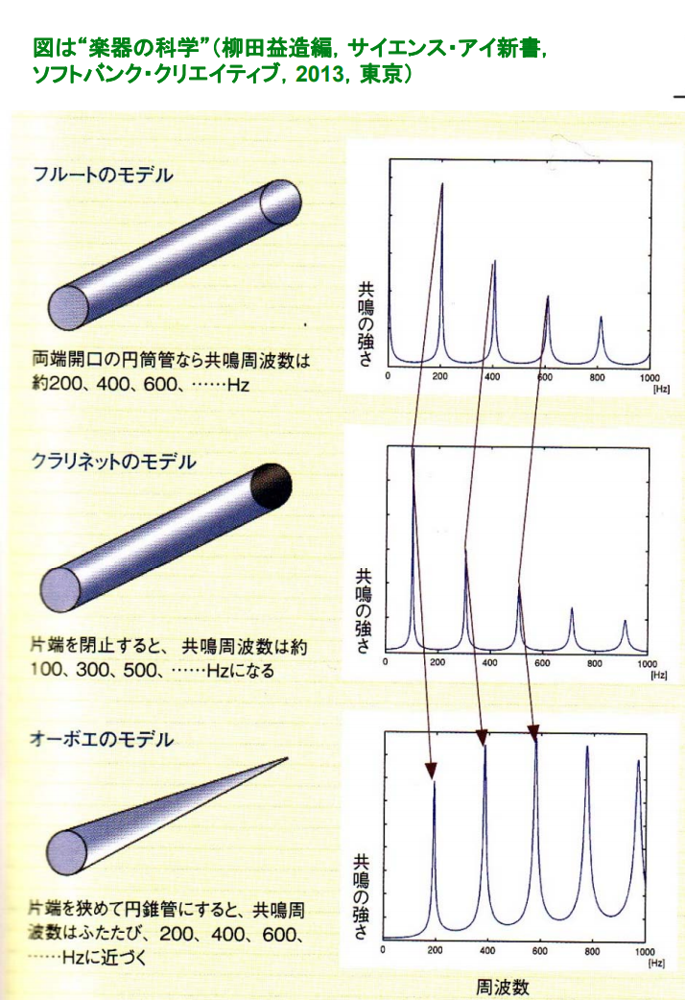

波
2020年度 物理基礎 長倉クラス
12月~
授業資料はこちら
この単元の目的
- 静止画から、現象をイメージできるようになろう！
- 今までは、運動している物体だけに注目すれば良かったが、波の単元では、動き全体に注目する必要がある。幅広い視野が必要。
- 目に見えない波を想像する。
No.7 定常波と共振
プラスチックバネを振ろう！

頌栄女子学院中学高等学校 北原先生 作図
実験結果

重ね合わせと共振
シミュレーションサイト
共振と共鳴
- ある特定のリズムで揺らしたときに大きく揺れる現象を、共振（音の場合は共鳴）と呼ぶ。
アルミ板の共振実験
動画
グラスの共振実験
動画
橋の共振
動画
参考


No.8 弦の振動実験
前回やったこと
- 入射波と反射波が重なり合うと、定常波ができる。
- 実際にやってみると、ちょうど良い振動数のときにしか定常波はできない。
- 手元でも波は反射しているので、２つ以上の波が重なっている！
- 行って戻って行って戻って…の全てがちょうどよく重なるとき、定常波は大きくなる。
--
参考 定常波
--
前回やったこと(続き)
今日やること
弦の共振条件を探る！
使うもの
- スピーカー
- アンプ(長倉の手作り)
→壊れやすいから引っ張らないで...
- iPhone
- Function Genelator アプリ
実験の状況の説明

実験道具は、全てセットアップ済み
--
参考 実験の様子

実験についてアドバイス
- スピーカーと糸は、軽く触れるように。
- まず、ピンクの弦から実験すること。
- 初めは、36~42Hzくらいで、２倍振動をみてみよう。
- +- 1Hz で微調整
- 表を埋めるのは、次回。まずは実験結果をまとめる！
No.9 弦の共振
思い出そう。
頌栄女子学院中学高等学校 北原先生 作図
No.9 音と波
スピーカーと火
横波と縦波
No.10 楽器の物理学
楽器と共鳴
ナチュラルホルン


ナチュラルホルン
- 管の長さを変えることはできない。右手で微調整はするけど、主に倍振動を行ったり来たりしながら音楽を奏でる。
楽器と共鳴②
モダンホルン

楽器と共鳴③

管の長さを変えると、固有振動数もかわる。
演奏の様子
閉管の共鳴
フルート
口側の端は、閉じている→固定端
閉管楽器

音響物理学